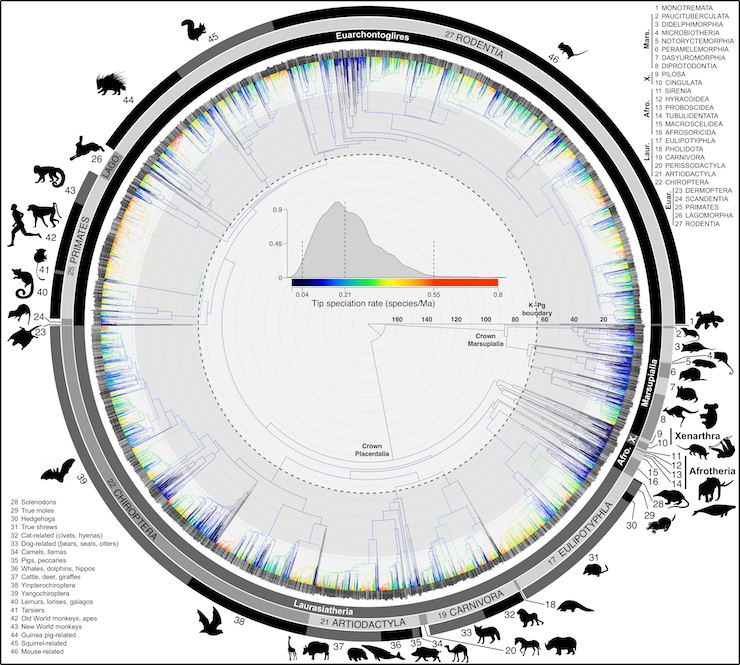

As we took on in the last module and read in Mortola and Lanthier (2004), body temperature (\(T_b\)) across mammals demonstrates predictable scaling patterns. In the analysis for the last project and in the analysis performed by Mortola and Lanthier (2004), neither accounted for the phylogenetic relationships of the species considered. After the project for Module 3, you’d be forgiven if you put a giant asterisk next to results of these analyses. That is, species are not statistically indepedent samples due to their shared evolutionary history (Felsenstein 1985).
Organismal biologists—ecologists, physiologists, and behavioral ecologists, to name a few—have a checkered history of including phylogenetic structure in their analyses (Freckleton, Harvey, and Pagel 2002). Accounting for phylogeny when asking comparative questions (i.e., how do traits vary between species?) isn’t always necessary (Westoby, Leishman, and Lord 1995), nor is it always appropriate in the way biologist use comparative methods (Uyeda, Zenil-Ferguson, and Pennell 2018). However, generally, when a biologists asks if one trait varies with another, especially when those traits are continuous, it’s a good idea to at least explore if those traits demonstrate some phylogenetic signal.
In this project, let’s reconsider the \(T_b\) analyses of Mortola and Lanthier (2004) in a phylogenetic context. In our last project, we focused on \(T_b\) oscillations (\(T_{\Delta}\)) using our own data for humans and data from Mortola and Lanthier (2004) for 52 species of non-human mammals. For our Module 7 project, we’ll also consider the scaling relationships of maximum daily \(T_b\) (\(T_{max}\)) and mininum daily \(T_b\) (\(T_{min}\)). We’ll focus only on their data so as to directly compare results. That is, we’ll use their data for humans, not ours from Module 6.
The specific goals of this porject are to:

You’ll first need to download the full dataset from Mortola and Lanthier (2004) that includes humans and 52 other species of mammals. In addition, please download the phylogeny for the taxa included in Mortola and Lanthier (2004). This is the same phylogenetic tree represented in the figure above taken from Upham, Esselstyn, and Jetz (2019), but pruned to include only those species represented in the study by Mortola and Lanthier (2004).
Your first task is to reproduce the scaling models constucted by Mortola and Lanthier (2004) and assess their signficance. For this you’ll need to construct log-log regression models of the three \(T_b\) variables as a function of mass (\(W\)). This is identical to the work you did in assessing the scaling relationships of \(T_{\Delta}\) in the last project and only needs to be repeated with the Mortola and Lanthier (2004) dataset and the two other \(T_b\) variables, \(T_{min}\) and \(T_{max}\).
The second task is to assess the phylogenetic signal of each of the four variables in the study: \(W\), the independent variable (i.e., our one covariate) and the three \(T_b\) variables. For this, we’ll have to complete new analyses we haven’t taken on before: Pagel’s \(\lambda\). This method transforms the tree, by decreasing \(\lambda\) (the phylogenetic signal) which lengthens the tip branches relative to internal branches, eventually decomposing the tree so that it begins to look like a complete polytomy, i.e., no phylogenetic relatedness or covariance between species. This can be seen as a way of muting phylogentic signal until the covariation of the error structure can no longer be explained by phylogenetic relatedness. If our estimated \(\lambda\) = 0, the tree has no effect on the traits and they are assumed to have no phylogenetic signal. When \(\lambda\) = 1, the traits conform to a Brownian motion model. Betweewn 0 and 1, there is some phylogenetic signal.
Let’s explore how this works. First we’ll have to load our mammal tree. Notice that there’s a gsub() operation here to remove pesky "_" from the species names in the tree. This will be important later when the tree is used in the PGLS analysis and the species names must match those in the tree and the dataset. We’ll also have to load the package geiger which carries the rescale() function we’ll use to demonstrate what Pagel’s \(\lambda\) does. [You won’t necessarily need geiger loaded for your project, this is just to demonstrate how Pagel’s \(\lambda\) works.]
## Loading required package: apem.phy <- read.tree("mammal.tree.pruned.txt")
m.phy$tip.label <- gsub("(\\w+)_(\\w+)","\\1 \\2",m.phy$tip.label)
m.phy0<- rescale(m.phy, model = "lambda", 0)
m.phy5 <- rescale(m.phy, model = "lambda", 0.5)
par(mfcol = c(1, 3))
plot(m.phy)
plot(m.phy5)
plot(m.phy0)The tree on the left is the unscaled phylogeny, the tree we’ll use in our analyses. The tree in the middle, with \(\lambda\)=0.5, rescales the tip branches, making the tips branch longer, allowing more phylogenetic independence between species. As you can see, the tree on the right, with a \(\lambda\)=0 removes the phylogenetic information form the tree, i.e., all species don’t covary according to their phylogenetic position. When we use Pagel’s \(\lambda\) to assess phylogenetic signal of a character, we iterate through values to 0 to 1 to find rescaled branch lengths that optimize the covariance of the character according to Brownian motion. As a reminder, values near 1 indicate strong phylogenetic signal, while values close to 0 indicate none.
Now let’s assess phylogenetic signal for some simulated trait data over the mammal tree. We’ll use phytools’s phylosig() function to do this after simulating some random trait.
## Loading required package: maps## Vulpes zerda Canis familiaris Nasua nasua
## 0.86432819 0.41130445 0.42838451
## Herpestes sanguineus Equus africanus Equus caballus
## 0.98435547 0.82875092 0.93700497
## Lama pacos Lama glama Sus scrofa
## 0.26059759 0.96681178 0.92242213
## Hippopotamus amphibius Bos taurus Capra hircus
## 0.10218722 0.85883812 0.13196200
## Tupaia belangeri Microcebus myoxinus Aotus trivirgatus
## 0.19928472 0.04435481 0.44874382
## Callithrix jacchus Cebuella pygmaea Saimiri sciureus
## 0.47314019 0.89452704 0.96456804
## Cebus albifrons Homo sapiens Macaca nemestrina
## 0.55057131 0.71728759 0.54796318
## Macaca fascicularis Macaca mulatta Macaca radiata
## 0.89106701 0.58020160 0.76119322
## Papio cynocephalus Oryctolagus cuniculus Ochotona rufescens
## 0.66430741 0.62005421 0.35311177
## Marmota monax Spermophilus richardsonii Cynomys ludovicianus
## 0.21999628 0.83834185 0.82007954
## Sciurus vulgaris Glaucomys volans Georychus capensis
## 0.36481673 0.82825703 0.57063085
## Cavia porcellus Octodon degus Spalax ehrenbergi
## 0.29868541 0.13121665 0.54989425
## Mus musculus Apodemus mystacinus Arvicanthis niloticus
## 0.62434976 0.13135402 0.82730468
## Rattus norvegicus Pachyuromys duprasi Meriones unguiculatus
## 0.98622572 0.51741070 0.06689816
## Acomys cahirinus Acomys russatus Peromyscus polionotus
## 0.55635416 0.27123134 0.55049922
## Peromyscus leucopus Ondatra zibethicus Mesocricetus auratus
## 0.94336628 0.06640170 0.83333898
## Cricetus cricetus Saccostomus campestris Elephas maximus
## 0.20638433 0.18147331 0.65838628
## Dasypus novemcinctus
## 0.52242883##
## Phylogenetic signal lambda : 6.6107e-05
## logL(lambda) : -9.9048
## LR(lambda=0) : -0.000533317
## P-value (based on LR test) : 1Here we simulated some random data (values from 0–1) for the number of tips on the tree using runif() to generate the values and Ntip() from the ape package to retrieve the number of tips (i.e., species) in the tree. We named these values with the tip labels from the tree, an important step. The phylosig() function in phytools requires that a vector of trait values must have names that match the tips in the tree. In your analyses make sure you name your variable values with the species from your dataset, not the tip labels. The order for these will certainly be different and, if not correct, will make any analysis rubbish.
For the phylogsig() operation, we set the method to “lambda” for Pagels’ \(\lambda\) and test=T so that the function performs a likelihood ratio test (LRT). If you remember from reading the appropriate section in Luke Harmon’s PCM book, a likelihood ratio test assesses the goodness of fit of two related statistical models based on the ratio of their likelihoods. In this context, we’re comparing the likelihoods of a model that includes an optimization of the \(\lambda\) value versus on one that has a \(\lambda\) value of 0, that is, no phylogenetic signal. As you can see from the results, the phylogenetic signal is extremely low at 6.6107e-05 and the result of the LRT, with a likelihood ratio of -0.0008, is nonsignifcant at p=1. That is, the phylogenetic signal is essentially 0 for these simulated data and, not suprisingly, there’s a probability of 1 that the value is not different than 0.
Now that you’ve been introduced to Pagel’s \(\lambda\), undertake such an analysis of all four variables in the data. In your analyses, be sure to include a table of these results that indicates the estimated \(\lambda\) value and p values from the LHTs.
You’ll notice that we’re doing many of these phylogenetic comparative analyses without the principles of the tidyverse, i.e., no pipe, etc. Most of the functions written in R packages for comparative methods don’t play well with tidy workflows. Be sure to pay attention to the pieces of advice given in this and other project descriptions to reduce headaches when performing comparative analyses.
Now that we have assessed phylogenetic signals for our four variables, procede with PGLS analyses of log-log regression models that include the three \(T_b\) variables versus mass. For each regression, construct a PGLS model that includes both a BM and OU model of trait evolution using the tree provide for the species in Mortola and Lanthier (2004). Be sure to assess which of these models fits the data best. From each of your best-fitting models, extract the slope (i.e, the scaling coefficient) and intercept and then perform an ANOVA test to evaluate the significance of these parameters. Report these values in table with an appropriate caption.
After reconstructing the models for \(T_b\) scaling in Mortola and Lanthier (2004), assessing phylogenetic signal, and constructing phylogenetically corrected models of your own, compare and contrast these findings. Should important findings in Mortola and Lanthier (2004) with regards to \(T_b\) variables be challenged? Did any of the signficant findings in Mortola and Lanthier (2004) become insignifcant or significant when they weren’t before?
Please submit your report to your team GitHub repository as an .Rmd document with HTML output that addresses the following questions:
In answering these questions, be sure to use the visualization, modeling, and model-assessments tools we’ve used in the course so far.
In answering your question, your .Rmd should include the following components:
Project reports should be pushed by 11:59 PM on Sunday, October 31st.
Please have a look at out Phase II report rubric to get a sense of how this and other Phase II reports will be grade.
Felsenstein, Joseph. 1985. “Phylogenies and the Comparative Method.” The American Naturalist 125 (1): 1–15.
Freckleton, Rob P, Paul H Harvey, and Mark Pagel. 2002. “Phylogenetic Analysis and Comparative Data: A Test and Review of Evidence.” The American Naturalist 160 (6): 712–26.
Mortola, Jacopo P, and Clement Lanthier. 2004. “Scaling the Amplitudes of the Circadian Pattern of Resting Oxygen Consumption, Body Temperature and Heart Rate in Mammals.” Comparative Biochemistry and Physiology Part A: Molecular & Integrative Physiology 139 (1): 83–95.
Upham, Nathan S, Jacob A Esselstyn, and Walter Jetz. 2019. “Inferring the Mammal Tree: Species-Level Sets of Phylogenies for Questions in Ecology, Evolution, and Conservation.” PLoS Biology 17 (12): e3000494.
Uyeda, Josef C, Rosana Zenil-Ferguson, and Matthew W Pennell. 2018. “Rethinking Phylogenetic Comparative Methods.” Systematic Biology 67 (6): 1091–1109.
Westoby, Mark, Michelle Leishman, and Janice Lord. 1995. “Further Remarks on Phylogenetic Correction.” Journal of Ecology 83 (4): 727–29.